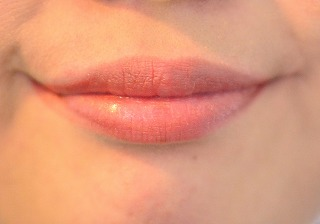
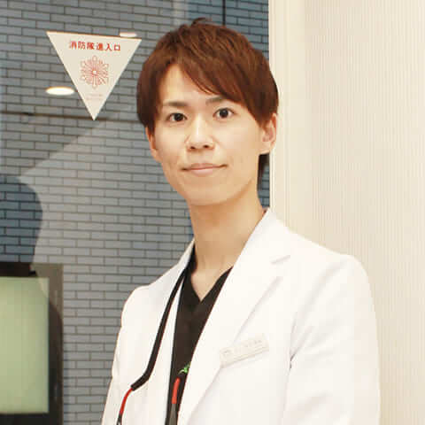
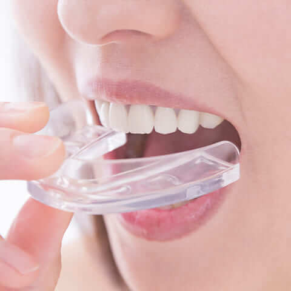

front矯正治療メニュー｜表側矯正
歯列矯正を考えた時に、まず思い浮かぶのが表側矯正です。最もメジャーな矯正方法で、子どもの頃に友達がやってた、という方も多いでしょう。
大人になってからでも表側矯正は受けられますが、大人になったらこそ不安を感じる方もいます。
歯並びと矯正、どちらかを優先する時代は終わりました。近年は、目立たずに表側矯正をすることが可能です。
今回は矯正を考えている方に向けて、表側矯正のメリット・デメリットを症例を交えて解説していきます。
表側矯正とは歯の表側につける矯正治療のこと
表側矯正とは、その名の通り歯の表側につける矯正治療のことです。これまで多くの方に利用されてきた矯正方法でもあります。
当院では、以下の2種類の表側矯正を提供しています。
| セラミックブラケット（クリッピー） | サファイヤブラケット（ラディアンス） |
|---|---|
| 短期間で目立たない矯正治療をしたい人向け | 丈夫かつ透明で目立たない |
最も一般的な方法
表側矯正は、ワイヤー矯正として歯の表側に装置をつける最もスタンダードな矯正方法です。
歯の表側1つ1つにブラケットをつけ、それらを繋ぐようにワイヤーを通します。繋がったワイヤーの引っ張る力によって歯並びを整える仕組みです。
多くの実績があり、オーソドックスかつ適用範囲が広い歯列矯正となっています。
歯列矯正の中でも最も歴史があるため、知り合いが矯正している姿を見たことがある方も多いでしょう。
一般的に歯列矯正と聞いて真っ先に思い浮かべる矯正方法です。ですが、目立つのではないかと不安を覚える方も一定数います。
目立たないようにもできる
表側矯正は、ブラケットの素材に透明や白いものを利用することで、目立ちにくくすることが可能です。
更にワイヤーも目立ちにくくすれば、より目立たなくなります。
マスク装着が当たり前の日常になったとはいえ、目立たないようにしたいと考えている方も多いでしょう。そうした方でも安心して矯正に取り組めます。
例えば、先述した矯正方法には以下の特徴があります。
| セラミックブラケット（クリッピー） | サファイヤブラケット（ラディアンス） |
|---|---|
| ブラケットに白く美しいセラミック製のものを選べる | 透明で目立たない |
歴史があるため、装置の種類が豊富なのです。一見するとマイナスのようにも感じられますが、目立たずに工夫することで思った以上にわからなくなります。
表側矯正の症例：医療法人社団ルーブル歯科・矯正歯科
叢生の表側矯正の症例
Before
After
| 患者様の主訴 | 歯のガタつき |
|---|---|
| 診断結果 | 叢生 |
| 治療内容 | 表側ワイヤー矯正 |
| 治療経過 | 後戻り無 |
| 治療期間 | 1年9ヶ月 |
| 治療費用 | 748,000円 |
すきっ歯の表側矯正の症例
Before
After
| 患者様の主訴 | すきっ歯気になる |
|---|---|
| 診断結果 | すきっ歯 |
| 治療内容 | 表側ワイヤー矯正 |
| 治療経過 | 後戻り無 |
| 治療期間 | 10ヶ月 |
| 治療費用 | 715,000円 |
叢生の表側矯正の症例
Before
After
| 患者様の主訴 | 歯のガタつき |
|---|---|
| 診断結果 | 叢生 |
| 治療内容 | 表側ワイヤー矯正 |
| 治療経過 | 後戻り無 |
| 治療期間 | 1年6ヶ月 |
| 治療費用 | 748,000円 |
過顎咬合の表側矯正の症例
Before
After
| 患者様の主訴 | 他院で矯正したが奥歯が噛んでない |
|---|---|
| 診断結果 | 過蓋咬合(かがいこうごう) |
| 治療内容 | 表側ワイヤー矯正 |
| 治療経過 | 後戻り無 |
| 治療期間 | 1年6ヶ月 |
| 治療費用 | 748,000円 |
上顎前突の表側矯正の症例
Before
After
| 患者様の主訴 | ガミースマイル |
|---|---|
| 診断結果 | 上顎前突 |
| 治療内容 | 表側ワイヤー矯正 |
| 治療経過 | 後戻り無 |
| 治療期間 | 2年6ヶ月 |
| 治療費用 | 660,000円 |
上顎前突の表側矯正の症例
Before
After
| 患者様の主訴 | 嚙み合わせ |
|---|---|
| 診断結果 | 上顎前突 |
| 治療内容 | 表側ワイヤー矯正 |
| 治療経過 | 後戻り無 |
| 治療期間 | 2年1ヶ月 |
| 治療費用 | 748,000円 |
切端咬合の表側矯正の症例
Before
After
| 患者様の主訴 | ガミースマイル |
|---|---|
| 診断結果 | 切端咬合、舌側傾斜 |
| 治療内容 | 表側ワイヤー矯正 |
| 治療経過 | 後戻り無 |
| 治療期間 | 2年 |
| 治療費用 | 693,000円 |
叢生の表側矯正治療の症例
Before
After
| 患者様の主訴 | 歯のガタツキ |
|---|---|
| 診断結果 | アングル二級、クロスバイト |
| 治療内容 | 表側ワイヤー矯正 |
| 治療経過 | 後戻り無 |
| 治療期間 | 2年5ヶ月 |
| 治療費用 | 748,000円 |
上顎前突の表側矯正の症例
Before
After
| 患者様の主訴 | 歯のガタツキ |
|---|---|
| 診断結果 | 上顎前突 |
| 治療内容 | 表側ワイヤー矯正 |
| 治療経過 | 後戻り無 |
| 治療期間 | 2年 |
| 治療費用 | 748,000円 |
表側矯正のメリット

表側矯正は、多くの方に選ばれている矯正方法です。選ばれるのには、しっかりした理由があります。
特に以下のメリットは、表側矯正ならではです。
- ほとんどの不正咬合を治療できる
- 違和感や発音のし辛さがない
- 歯磨きしやすい
- 低価格
ほとんどの不正咬合を治療できる
表側矯正は、歴史が長く多くの方に利用されています。そのため、対応できる装置の種類が多く、ほとんどの不正咬合を治療できます。
他の矯正では治療が難しい症例であったとしても、細かい歯のコントロールができるため対応可能です。
インビザラインなどで対応が難しいと判断された方でも、治療可能な場合が多い矯正方法となります。
違和感や発音のし辛さが少ない
表側矯正は、その名の通り歯の表側に矯正装置をつける矯正方法です。表側につけるため、舌を邪魔しません。
発声において舌の働きは重要です。表側矯正では舌の働きを阻害しないため、矯正前後で発声が変わりません。他にも舌と擦れることがなく、口内炎の発症を防げます。
歯磨きしやすい
表側矯正は見える位置に矯正装置があるため、歯を手入れしやすいメリットがあります。汚れの位置を目視しながら歯磨きができるわけですね。
矯正装置をつけると、どうしても食事中に食べかすがつきやすくなってしまいます。マスクをすることが多くなったとはいえ、人前で喋る際に気になる方も多いでしょう。
そのような場合でも鏡を見ながら汚れを取り除けるのは、表側矯正ならではです。
低価格
表側矯正は、裏側矯正やマウスピース型矯正と比べて、比較的低価格な傾向にあります。
歯列矯正は費用が高額になりがちなので、少しでも費用を抑えたい方にとっては大きなメリットです。
表側矯正のデメリット

表側矯正にはデメリットもあります。治療を検討している方は、デメリットも知った上で治療を受けるか判断してください。
デメリットの中でも特に大きなものは、以下の4つです。
- 矯正装置が見えてしまう
- 口を閉じにくい
- 食べかすが引っかかりやすい
- 口内を傷つけやすい
矯正装置が見えてしまう
表側装置は歯の表側に装着するため、どうしても矯正装置が見えてしまいます。
マスクをつけることが日常となった現在でも、ふとした瞬間にマスクを外すことは多くあります。
そうした際に見てしまうのを避けたいと考えてる方も多いでしょう。
特に、見た目を気にする方や矯正を知られたくない方にとって、矯正装置が見てしまうのは大きなデメリットです。
矯正装置によって口元にボリュームが出てしまう点も、考慮した方が良いでしょう。
口を閉じにくい

表側矯正は、口を閉じにくくなってしまうデメリットもあります。
矯正装置が唇側についてしまうため唇が装置に引っかかり、口が閉じにくい状況になってしまうのです。
口がしっかり閉まらないと口の中が乾燥し、口臭の原因となることも。
意識して口を閉じるようにするなど、気をつけながら生活を送る必要があります。
食べかすが引っかかりやすい
表側矯正・裏側矯正に共通するデメリットとして、矯正装置に食べかすが引っかかりやすい点が挙げられます。
装置をつけているため、どれだけ気をつけて食事をしても避けようがありません。
表側矯正の場合、鏡を使えば確認できます。食事の後に必ず鏡を見るなど、ルーティンに組み込みましょう。
外食時は食事後すぐにお手洗いで確認することをオススメします。
口内を傷つけやすい
表側矯正・裏側矯正は、矯正装置によって口内が傷つく可能性があります。口内炎の原因となることも。
特に注意したいのが、矯正を始めてすぐのタイミングです。歯並びがガタついていると、口内に装置が当たりやすく、すぐに傷ついてしまいます。
- 唇
- 頬の内側
これらの箇所は、口内炎ができやすい箇所です。ただ、ある程度時間が経過すると、歯並びの改善によって発症が抑えられます。
気になる方は、治療を受けているクリニックに相談しましょう。
表側矯正がオススメの人
表側矯正は様々な症例に対応できる歯列矯正です。中でも以下の方にオススメできます。
- 費用をできる限り抑えたい人
- 矯正中の見た目を特に気にしない人
- 矯正中に滑舌が悪くなるのを避けたい人
- 顔面衝突のリスクがある仕事・スポーツをしていない人
それぞれに共通している点は、表側矯正のメリットを活かせることです。
逆に言えば、これらに当てはまらない方は、治療中に負担を感じてしまう可能性があります。
現在のライフワークと照らし合わせながら、検討してください。
ルーブル歯科・矯正歯科の表側矯正は目立ちにくい
ルーブル歯科・矯正歯科では、目立ちにくい表側矯正を提供しています。
- 目立つ矯正装置をつけたくない
- 矯正知力を他人に気付かれたくない
- 仕事上、目立つ装置を付けられない
- 金属アレルギーがある
こうした方でも安心して治療を受けられます。
矯正方法は審美矯正と呼ばれる方法で、以下の2種類です。
- セラミックブラケット（クリッピー）
- サファイヤブラケット（ラディアンス）
表側矯正で目立つ要因であるブラケットの素材に、透明や白いものを使うことで目立ちにくくしています。
更にワイヤーも目立ちにくいものを選べば、より目立たない矯正が可能です。
ルーブル歯科・矯正歯科の表側矯正の費用
当院で提供している表側矯正の費用は、以下になります。
この他、希望者のみオプション費用がかかります。カウンセリングや診断は無料ですので、何でもご相談ください。
| 矯正方法 | 総額（税込） | 調整料（1回あたり） |
|---|---|---|
| クリアブラケット+ホワイトワイヤー | 715,000円 | 6,600円 |
|
ハーフリンガル （上顎：舌側矯正 / 下顎：表側矯正） |
924,000円 | 8,800円 |
渋谷で表側矯正をするなら渋谷ルーブル歯科・矯正歯科へ
表側矯正は、古くから実施されている治療法です。ほとんどの不正咬合を治療でき、価格も比較的安くなっています。
一方で歯の表側に矯正装置をつけるため、目立ってしまうデメリットがあります。美容面では大きな負担となることも。
近年は目立ちにくい表側矯正が少しずつ提供され始めています。ルーブル歯科・矯正歯科では、表側矯正はもちろん、より目立ちにくいマウスピース型矯正も可能です。渋谷で歯列矯正ができる歯科を探している方は、ぜひ1度お気軽にご相談ください。
～医療法人社団ルーブル歯科・矯正歯科の無料サービス～
当院では患者様のご負担を軽減するために、次の3つのことを無料サービスにてご提供しています。
- 
カウンセリング
費用や治療法、期間など、矯正治療についてわからないことはありませんか？ 当院ではカウンセリングを無料にて行っています。何でもご相談ください。

ホームホワイトニング無料
当院では矯正治療の期間中に、Googleの口コミ書いていただいた方にはホームホワイトニング一本プレゼントしております。マウスピース型矯正は治療中に、それ以外の治療法については保定期間に行います。
- 
リテーナー（保定装置）
新品交換
保険診療で定期検診に来られた方には、矯正治療後の保定装置（リテーナー）を無料にて新品に交換させていただきます。常にきれいな装置で快適です。